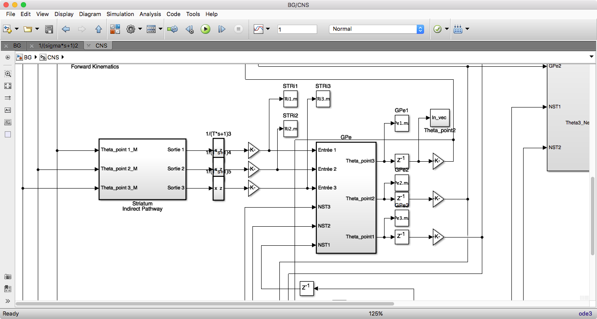
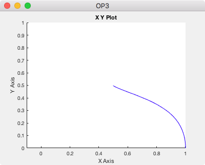

This is the readme for the model associated with the paper:
Salimi-Badr A, Ebadzadeh MM, Darlot C (2017) A possible correlation
between the basal ganglia motor function and the inverse kinematics
calculation. J Comput Neurosci
This model was contributed by A Salimi-Badr.
It is a model of solving inverse kinematics (IK) based on Basal Ganglia (BG)
It was originally simulated in Matlab 2014 and has been found to also work in Matlab 2017b.
To run the simulation:
- - Run parameters.m
- - Run BG.slx (after typing BG on the matlab command line once the below window loads select Simulation -> Run from the simulink menus:

- After running you will see a graph like the below and files will be written to the top level folder:

- - After simulation, to see the movement run animation.m
To simulate the Parkinsonian condition:
- - set g = 0.1 in parameters.m
- - set tau = 0.050 in parameters.m
To show the circular movement:
- - Replace Reaching block with Circular block